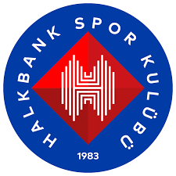


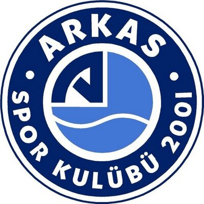
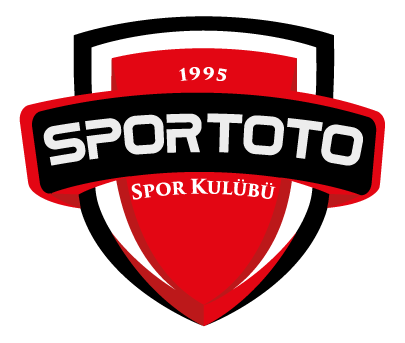
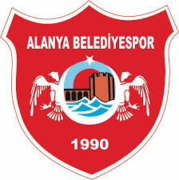
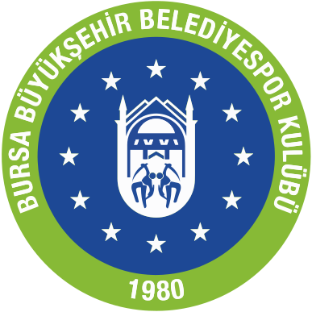
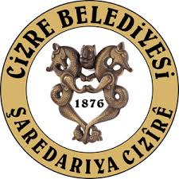
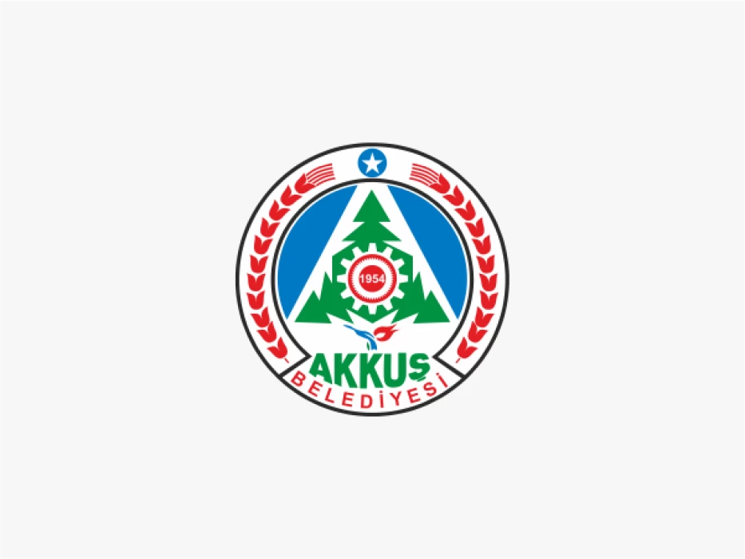
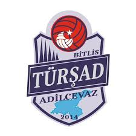
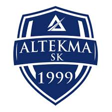
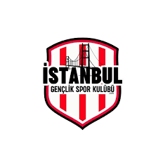
Efeler Ligi, Türkiye'deki erkek voleybolunun en üst seviyesi olarak 2008 yılında, Aroma ile yapılan sponsorluk anlaşmasının ardından "Aroma Erkekler Voleybol 1. Ligi" olarak anılmaya başlanmıştır. Bu isim, 4 yıl süresince geçerli olmuştur. 2012 yılında ise Acıbadem Holding ile yapılan 2 yıllık sponsorluk anlaşması ile lig, "Acıbadem Erkekler Voleybol 1. Ligi" olarak adlandırılmıştır. 2014-2015 sezonundan itibaren, lig tekrar "Türkiye Erkekler Voleybol 1. Ligi" ismiyle anılmaya başlamıştır. Ancak 2016 yılı itibarıyla, lig ismi "Efeler Ligi" olarak değiştirilmiştir. 2019 yılından itibaren ise, AXA Sigorta ile yapılan sponsorluk anlaşması sonucunda, lig 2 sezon boyunca "AXA Sigorta Efeler Ligi" olarak bilinir olmuştur.
Lig Etabını ilk dört sırada tamamlayan takımlar, Play-Off 1. Etap maçlarına katılırlar. Bu etap sonunda, ligin 1., 2., 3. ve 4.'sü belirlenir.
Lig Etabını 5., 6., 7. ve 8. sırada tamamlayan takımlar, Play-Off 2. Etap maçlarına katılır. Bu etap sonunda ise, ligin 5., 6., 7. ve 8.'si belirlenir.
Avrupa Kupalarına katılım (Şampiyonlar Ligi, CEV Cup, Challenge Cup ve Balkan Kupası gibi) Play-Off 1. ve 2. Etap maçları sonunda belirlenen sıralamaya göre yapılır.
Lig Etabını birinci sırada tamamlayan takım, CEV Şampiyonlar Ligi'ne katılmaya hak kazanır, ancak katılım sırası CEV kontenjanına bağlı olarak belirlenir.
Lig Etabı sonunda, son iki sırada (13. ve 14.) yer alan takımlar 1. Lig'e düşer.
| Sezon | Şampiyon |
|---|---|
| 1970-71 | Galatasaray |
| 1971-72 | İETT |
| 1972-73 | İETT |
| 1973-74 | İETT |
| 1974-75 | Muhafızgücü |
| 1975-76 | Eczacıbaşı |
| 1976-77 | Büyükdere Boronkay |
| 1977-78 | Eczacıbaşı |
| 1978-79 | Eczacıbaşı |
| 1979-80 | Eczacıbaşı |
| 1980-81 | Eczacıbaşı |
| 1981-82 | Eczacıbaşı |
| 1982-83 | Eczacıbaşı |
| 1983-84 | Eczacıbaşı |
| 1984-85 | Eczacıbaşı |
| 1985-86 | Eczacıbaşı |
| 1986-87 | Galatasaray |
| 1987-88 | Galatasaray |
| 1988-89 | Galatasaray |
| 1989-90 | Eczacıbaşı |
| 1990-91 | Eczacıbaşı |
| 1991-92 | Halkbank |
| 1992-93 | Halkbank |
| 1993-94 | Halkbank |
| 1994-95 | Halkbank |
| 1995-96 | Halkbank |
| 1996-97 | Netaş |
| 1997-98 | Netaş |
| 1998-99 | Netaş |
| 1999-00 | Arçelik |
| 2000-01 | Arçelik |
| 2001-02 | Erdemirspor |
| 2002-03 | Arçelik |
| 2003-04 | Erdemirspor |
| 2004-05 | Erdemirspor |
| 2005-06 | Arkas Spor |
| 2006-07 | Arkas Spor |
| 2007-08 | Fenerbahçe |
| 2008-09 | İstanbul BŞB |
| 2009-10 | Fenerbahçe |
| 2010-11 | Fenerbahçe |
| 2011-12 | Fenerbahçe |
| 2012-13 | Arkas Spor |
| 2013-14 | Halkbank |
| 2014-15 | Arkas Spor |
| 2015-16 | Halkbank |
| 2016-17 | Halkbank |
| 2017-18 | Halkbank |
| 2018-19 | Fenerbahçe |
| 2019-20 | COVID-19 pandemisi sebebiyle şampiyon belirlenmedi |
| 2020-21 | Ziraat Bankası |
| 2021-22 | Ziraat Bankası |
| 2022-23 | Ziraat Bankası |
| 2023-24 | Halkbank |
| Takım Adı |
|---|
| Halkbank 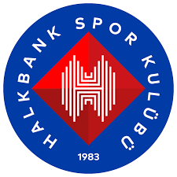 |
| Fenerbahçe |
| Ziraat Bankası |
| Galatasaray |
| Arkas Spor 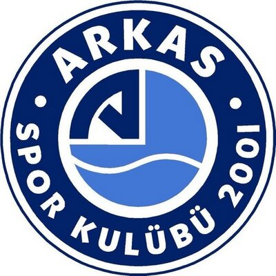 |
| Spor Toto 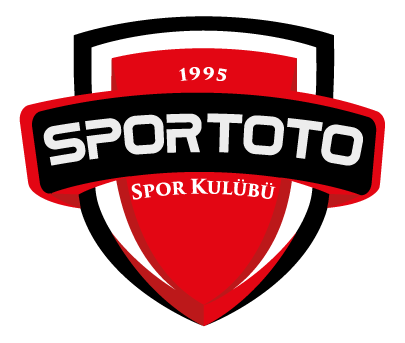 |
| Alanya Belediyespor 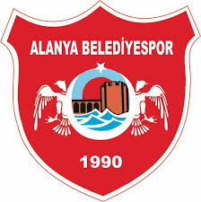 |
| Bursa Büyükşehir Belediyespor 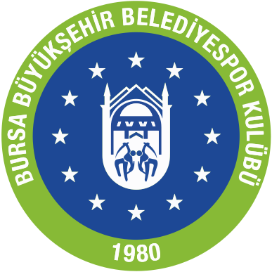 |
| Cizre Belediyespor 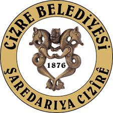 |
| Akkuş Belediyespor 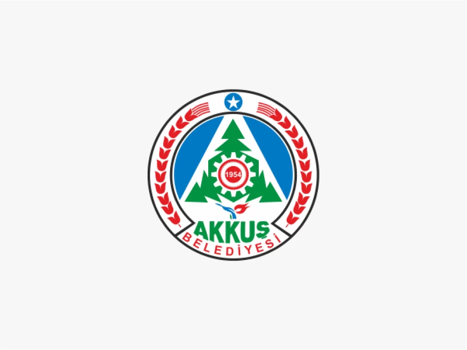 |
| Türşad 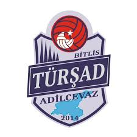 |
| Altekma 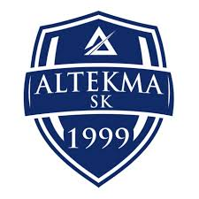 |
| İstanbul Gençlik Spor 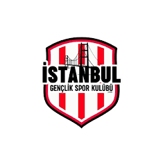 |